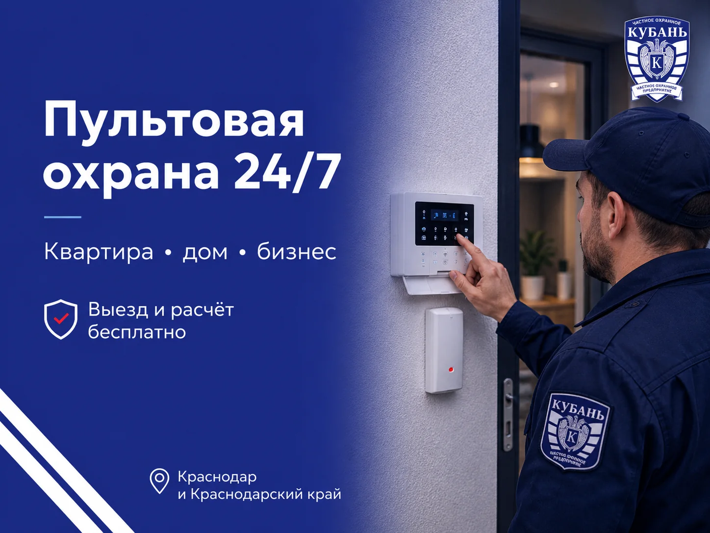
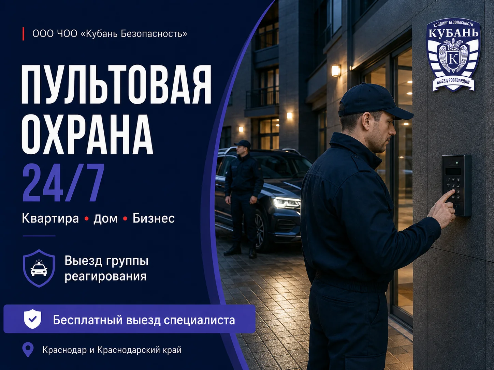
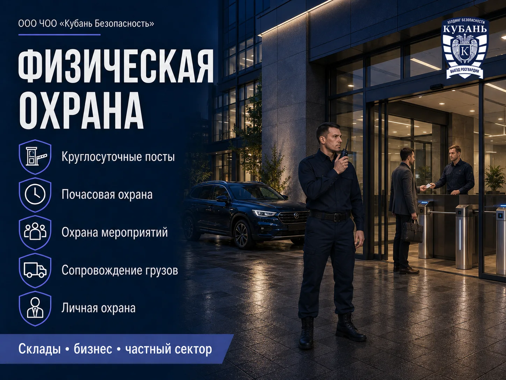
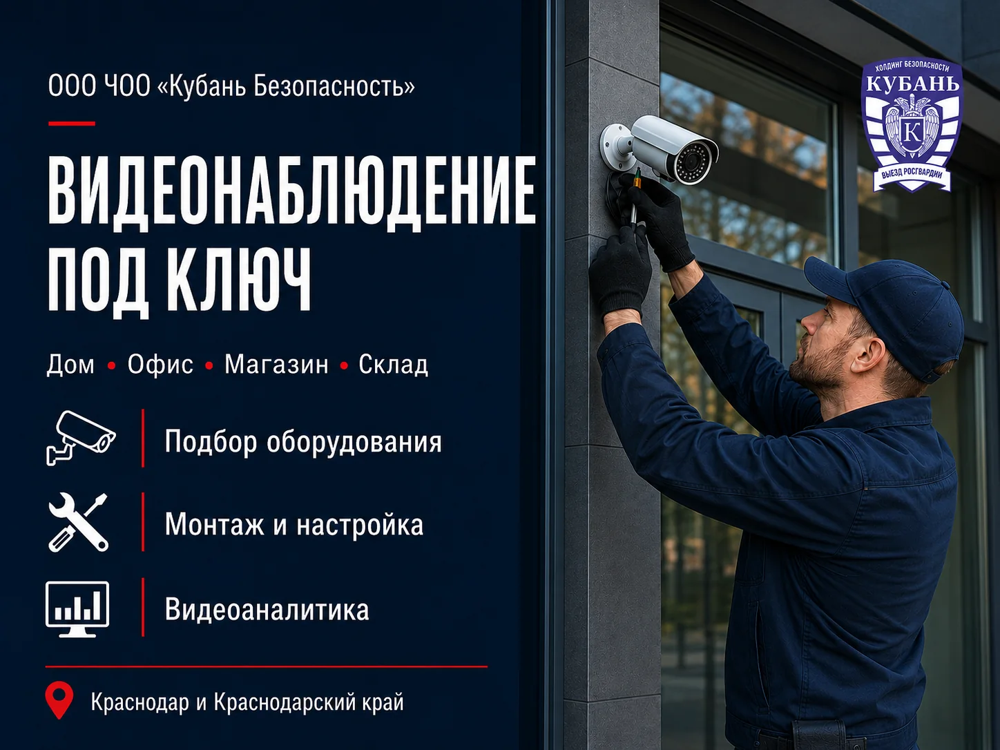
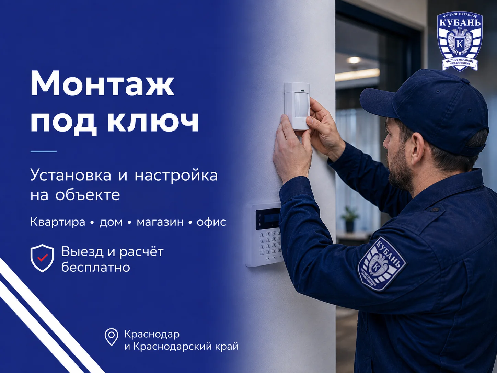
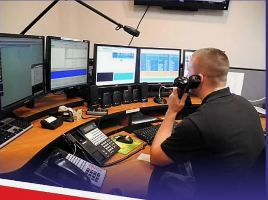

Пультовая охрана
Монтаж сигнализации, мониторинг 24/7 и выезд группы быстрого реагирования при тревоге.
Подробнее →Квартиры • дома • магазины • офисы • склады
Монтаж сигнализации, мониторинг и выезд группы реагирования.

Проектируем, монтируем и обслуживаем системы для квартир, домов, офисов, магазинов, складов и предприятий.
Монтаж сигнализации, мониторинг 24/7 и выезд группы быстрого реагирования при тревоге.
Подробнее →Круглосуточные посты, сопровождение грузов, охрана мероприятий и личная охрана.
Подробнее →Камеры, видеопункт, видеоаналитика и интеграция с общей системой безопасности.
Подробнее →Сигнализация передаёт тревогу оператору, после проверки информации на объект направляется группа реагирования.

Монтаж под ключ. Бесплатный выезд специалиста, подбор решения и предварительный расчёт.
Получить расчётКруглосуточные и почасовые посты, охрана мероприятий, сопровождение грузов и персональная защита.

Формат под вашу задачу. Определим режим работы, количество постов и подготовим предварительный расчёт.
Получить расчётБольшой выбор оборудования, монтаж и пусконаладка, круглосуточный видеопункт и единый контроль объекта.

Видеоаналитика. Распознавание лиц, подсчёт людей, фиксация номеров и поиск опасных ситуаций.
Получить расчётВыберите объект — покажем подходящий состав системы. Точную комплектацию специалист определит после обследования.
Датчик фиксирует движение, открытие или другое событие.
Оператор получает тревогу и данные охраняемого объекта.
Проверяет сигнал и направляет ближайшую группу.
Специалисты реагируют по установленному регламенту.
Суточный пост — от 150 000 ₽
Полусуточный пост — от 80 000 ₽
Квартира — от 1 500 ₽
Дом — от 2 000 ₽
Бизнес — от 2 500 ₽
Мероприятия — от 500 ₽
Авто — от 650 ₽
Сопровождение — от 1 500 ₽
Точная стоимость зависит от типа объекта, оборудования, количества зон и формата охраны. Расчёт проводится после уточнения задачи.

От первого обращения до поддержки установленной системы.
Работаем в Краснодаре и Краснодарском крае с 2013 года. Оператор контролирует сигналы круглосуточно, а условия обслуживания фиксируются в договоре.

Более десяти лет работаем с частными и коммерческими объектами.
Тревожные сигналы принимаются и обрабатываются круглосуточно.
Условия, состав услуг и ответственность закрепляются официально.
Используем оборудование с необходимыми сертификатами.
Отзывы покупателей опубликованы на площадке Авито в августе 2025 года.
«Очень качественно проконсультировали, быстро приехали и смонтировали. Специалист всё разложил по полочкам. Отлично знает своё дело».
Покупатель · Авито
«Приехали и сделали всё, как я хотел, под ключ. Теперь есть доступ, и я уверен в безопасности своей семьи и квартиры».
Павел Н. · Авито
Возможность выезда и формат обслуживания конкретного объекта специалист уточнит при обращении.
Уточнить возможность выездаВыберите направление и откройте интересующий вопрос. Мы собрали короткие ответы о подключении, работе и стоимости услуг.
Тревожный сигнал поступает на пульт мониторинга. Оператор обрабатывает событие и действует по установленному алгоритму: связывается с ответственным лицом и при необходимости направляет группу реагирования.
К пультовой охране можно подключить квартиру, частный дом, офис, магазин, склад, коммерческое помещение и другие объекты.
Да, если установленное оборудование совместимо с системой мониторинга. Специалист предварительно проверит оборудование и подскажет, можно ли использовать его без полной замены.
Да. Тревожную кнопку можно установить в магазине, офисе, салоне, на складе и других объектах, где требуется возможность быстро передать сигнал тревоги.
Мониторинг объекта осуществляется круглосуточно. При поступлении тревожного сигнала оператор действует согласно установленному регламенту.
Стоимость зависит от типа объекта, необходимого оборудования, количества охранных зон и других технических особенностей. Точный расчёт специалист сможет сделать после консультации и осмотра объекта.
Физическую охрану можно организовать для офисов, магазинов, складов, строительных площадок, производственных объектов, жилых комплексов и других территорий.
Да. Формат работы подбирается под задачу: круглосуточный пост, дневная или ночная смена, почасовая охрана или охрана на определённый период.
Да. Возможна охрана корпоративных мероприятий, выставок, встреч, праздников и других событий. Количество сотрудников определяется с учётом площадки, количества гостей и особенностей мероприятия.
Да. Возможно сопровождение грузов и материальных ценностей. Условия и маршрут предварительно согласовываются индивидуально.
Количество сотрудников зависит от площади объекта, режима работы, количества входов и выходов, уровня риска и задач, которые необходимо выполнять на объекте.
Стоимость рассчитывается индивидуально и зависит от графика, количества сотрудников, продолжительности работы и особенностей объекта.
Да. Специалисты могут подобрать оборудование, выполнить монтаж, подключение, настройку камер и проверку работы системы.
Да, если выбранное оборудование поддерживает удалённый доступ и на объекте есть необходимое интернет-соединение. Доступ можно настроить со смартфона, планшета или компьютера.
Количество камер зависит от площади, планировки и задач системы. Специалист определит основные зоны контроля и предложит оптимальное расположение оборудования.
Да. Для улицы используются камеры, рассчитанные на наружную установку и соответствующие условия эксплуатации.
Во многих случаях — да. Сначала необходимо проверить совместимость оборудования и возможности установленной системы.
Срок хранения зависит от объёма накопителя, количества камер, качества записи и настроек системы. При проектировании можно подобрать объём хранения под необходимый срок.
Оставьте заявку или напишите нам в мессенджер — специалист уточнит задачу и подскажет подходящий вариант.
Оставьте контакты. Специалист уточнит задачу, ответит на вопросы и согласует бесплатный выезд.
Адресг. Краснодар, ул. Новороссийская, 102, корп. 8
ООО ЧОО «Кубань Безопасность» · Работаем круглосуточно · Компания основана в 2013 году
Директор: Гайворонский Сергей Олегович
Подберём решение под ваш объект и подготовим предварительный расчёт.
Связаться со специалистом